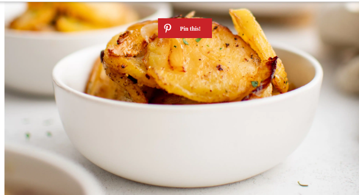
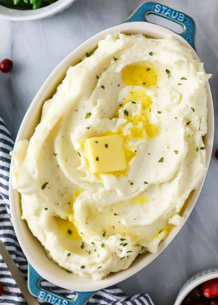

Fried Potatoes with onions
Ingredients
potatoes
onions
oil
garlic powder
salt
black pepper
Cooking Instructions
1. Heat the oil in a large frying pan, cast-iron skillet, or nonstick skillet over medium heat.
Once the oil is hot, stir in the sliced potatoes and sliced onions and sprinkle with garlic powder,
salt, and black pepper. Mix well to coat in the seasoning.
2. Let the potatoes cook for 5 minutes without disturbing. The “first sear” is the most importan
t so leave them to cook for 5-7 minutes before flipping.
3. Continue to cook for approximately 20 minutes, flipping the potatoes every 5 minutes. Avoid over-mixing
or flipping, as this will result in mushy potatoes.
4. You will know your potatoes are done when they are pleasantly charred along the edges and soft on the inside.
5. Season with additional salt and black pepper to taste, or garnish with fresh parsley, if desired

Mashed Potatoes
Ingredients
potatoes
Milk
butter
Salt and pepper
Cooking Instructions
1.Peel (optional), chop, and rinse your potatoes under cold water, then place them in a large pot.
2. Fill the pot with cool water, making sure the potatoes are covered with at least ½″ of water.
Bring this to a boil and cook until the potatoes are tender, about 10 minutes.
3.Drain the potatoes, then place them back in the warm pot. Let this sit for about 2 minutes, then
drizzle in melted butter/milk mixture.
4.Add salt and pepper to taste, then mash the potatoes until smooth. Do not over-mix!
5.Stir in any add-ins and enjoy.
